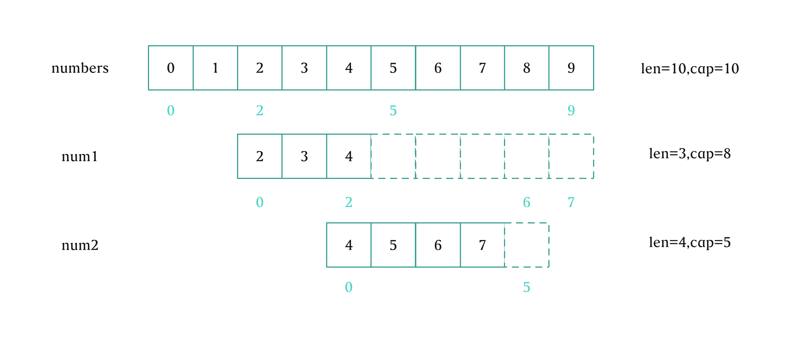
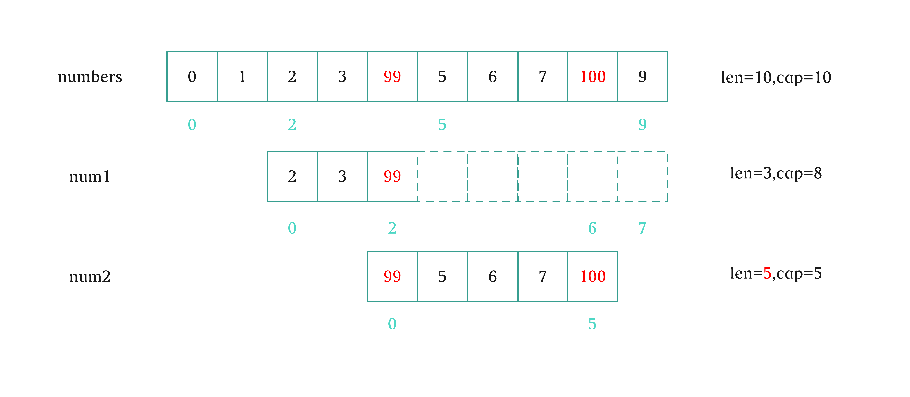
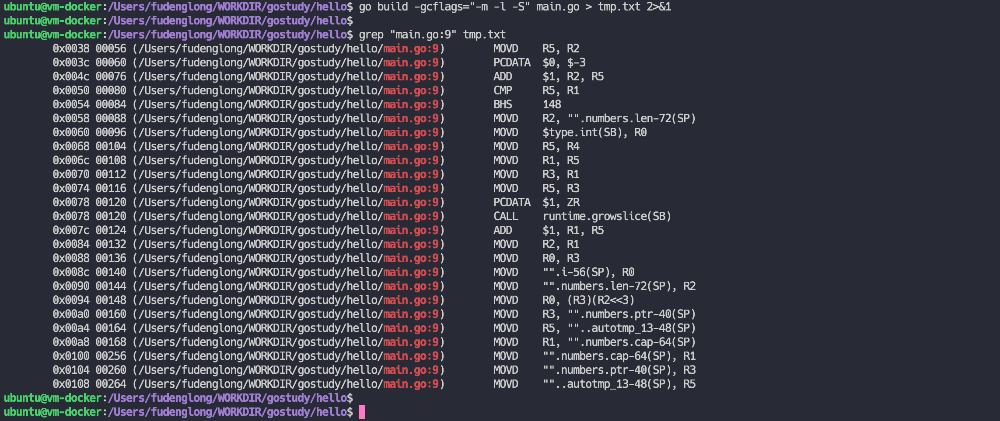

slice 是 Go 里面最常用的数据结构之一，相比起长度固定的数组，slice 使用起来更加灵活，它可以动态扩容，可以从其他 slice 或者数组创建。不过 slice 的底层依然是一个固定长度的数组，也就是一片连续内存，当插入新的元素时，如果当前容量不够，就需要扩容，申请一片足够大的内存，并将原有的内容的复制进去。
接下来的测试使用的 Go 版本都是：go version go1.18 darwin/arm64。
创建一个 slice，我们有下面几种方法（Go 官方文档
1 2 3 4 5 6 7 8 9 10 11 12 13 14 15 16 17 18 19 20 21 22 23 24 25 26 27 28 package mainimport "fmt" func main () var s1 = []int {1 , 2 , 3 , 4 } fmt.Println(s1, len (s1), cap (s1)) var s2 = make ([]int , 10 , 10 ) fmt.Println(s2, len (s2), cap (s2)) var arr = [10 ]int {0 , 1 , 2 , 3 , 4 , 5 , 6 , 7 , 8 , 9 } var s3 = arr[2 :8 ] fmt.Println(s3, len (s3), cap (s3)) var s4 = s3[1 :4 :7 ] fmt.Println(s4, len (s4), cap (s4)) var s5 = (&arr)[2 :4 ] fmt.Println(s5, len (s5), cap (s5)) }
这将输出：
[1 2 3 4] 4 4
[0 0 0 0 0 0 0 0 0 0] 10 10
[2 3 4 5 6 7] 6 8
[3 4 5] 3 6
[2 3] 2 8
slice 在运行时被表示为 reflect.SliceHeader，其中的 Len 和 Cap 分别对应长度和容量，Data 是指向底层数组的指针：
1 2 3 4 5 6 7 8 9 10 11 type SliceHeader struct { Data uintptr Len int Cap int }
可以从底层的数组同时创建多个切片，那么只要修改这些切片的中的一个就会影响到其他的，append 超过底层数组的容量还会创建更大容量的新数组，我们来看一个例子。
1 2 3 4 5 6 7 8 9 10 11 12 13 package mainimport "fmt" func main () numbers := []int {0 , 1 , 2 , 3 , 4 , 5 , 6 , 7 , 8 , 9 } num1 := numbers[2 :5 ] num2 := num1[2 :6 :7 ] fmt.Println(numbers, len (numbers), cap (numbers)) fmt.Println(num1, len (num1), cap (num1)) fmt.Println(num2, len (num2), cap (num2)) }
这将输出：
[0 1 2 3 4 5 6 7 8 9] 10 10
[2 3 4] 3 8
[4 5 6 7] 4 5
这时候我们来看 numbers，num1 和 num2 之间的关系，都是基于底层相同的数组创建：

如果这个时候我们更新 num2[0]，并且再 num2 后面再追加一个元素，按道理应该会同时影响到 numbers 和 num1：
1 2 3 4 5 6 7 8 9 10 11 12 13 14 15 16 package mainimport "fmt" func main () numbers := []int {0 , 1 , 2 , 3 , 4 , 5 , 6 , 7 , 8 , 9 } num1 := numbers[2 :5 ] num2 := num1[2 :6 :7 ] num2[0 ] = 99 num2 = append (num2, 100 ) fmt.Println(numbers, len (numbers), cap (numbers)) fmt.Println(num1[:cap (num1)], len (num1), cap (num1)) fmt.Println(num2, len (num2), cap (num2)) }
这将输出：
[0 1 2 3 99 5 6 7 100 9] 10 10
[2 3 99 5 6 7 100 9] 3 8
[99 5 6 7 100] 5 5
我们再来看 numbers，num1 和 num2 的状态：

num2[0] 的修改影响到了 numbers[4] 和 num1[2]，而 append(num2, 0) 也会影响到底层的数数组。
如果我们再往 num2 后面追加，这会超过 num2 的容量，理论上需要创建新的底层数组，但是这不会再影响 num1 和 numbers 了：
1 2 3 4 5 6 7 8 9 10 11 12 13 14 15 16 17 18 19 20 21 22 23 24 25 26 27 28 29 30 31 32 33 34 35 36 37 38 39 40 41 package mainimport ( "fmt" "reflect" "unsafe" ) func getSliceDataPointer (num []int ) uintptr { numHeader := (*reflect.SliceHeader)(unsafe.Pointer(&num)) return numHeader.Data } func main () numbers := []int {0 , 1 , 2 , 3 , 4 , 5 , 6 , 7 , 8 , 9 } num1 := numbers[2 :5 ] num2 := num1[2 :6 :7 ] num2[0 ] = 99 num2 = append (num2, 100 ) intSize := unsafe.Sizeof(int (0 )) fmt.Println(getSliceDataPointer(num2) == getSliceDataPointer(num1)+2 *intSize) fmt.Println(getSliceDataPointer(num2) == getSliceDataPointer(numbers)+4 *intSize) num2 = append (num2, 100 ) fmt.Println(getSliceDataPointer(num1) == getSliceDataPointer(numbers)+2 *intSize) fmt.Println(getSliceDataPointer(num2) != getSliceDataPointer(num1)+2 *intSize) num2[0 ] = 88 fmt.Println(numbers, len (numbers), cap (numbers)) fmt.Println(num1[:cap (num1)], len (num1), cap (num1)) fmt.Println(num2, len (num2), cap (num2)) }
这将输出：
true
true
true
true
[0 1 2 3 99 5 6 7 100 9] 10 10
[2 3 99 5 6 7 100 9] 3 8
[88 5 6 7 100 100] 6 10
我们再来看 numbers，num1 和 num2 的状态，num2 已经有了自己的底层数组，和 number 以及 num1 完全没有关系了：
slice 当然可以做为函数参数传递，而且 slice 运行时就是表示为 reflect.SliceHeader，所以在将 slice 作为参数传递时，就姑且把它当成 reflect.SliceHeader 的一个值。只要通过这个值修改了底层的数组，自然而然是可以反映到外层的切片中去的，例如：
1 2 3 4 5 6 7 8 9 10 11 12 13 14 15 16 package mainimport "fmt" func updateNumbers (num []int ) if len (num) > 0 { num[0 ] = 1 } } func main () numbers := []int {9 , 9 , 9 , 9 , 9 } fmt.Println(numbers) updateNumbers(numbers) fmt.Println(numbers) }
这将输出：
[9 9 9 9 9]
[1 9 9 9 9]
在 updateNumbers 中为 num[0] 赋值，会修改底层数组，所以会影响到 main 函数中的 numbers。那么我们再来看看在函数中为 slice 追加值又会如何，看下面的例子：
1 2 3 4 5 6 7 8 9 10 11 12 13 14 15 16 17 18 19 20 21 22 23 package mainimport ( "fmt" "reflect" "unsafe" ) func appendNumbers (num []int , n int ) num = append (num, n) } func main () numbers := make ([]int , 0 , 2 ) appendNumbers(numbers, 1 ) fmt.Println(numbers, numbers[:cap (numbers)]) appendNumbers(numbers, 2 ) fmt.Println(numbers, numbers[:cap (numbers)]) numbersHeader := (*reflect.SliceHeader)(unsafe.Pointer(&numbers)) numbersHeader.Len = 1 fmt.Println(numbers, numbers[:cap (numbers)]) }
这将输出：
[] [1 0]
[] [2 0]
[2] [2 0]
这说明 appendNumbers 确实修改了底层的数组，但并未影响 numbers 的表现，因为它的长度是 0，所以，我们可以把传入 appendNumbers 的 num 看做是 numbers 的一个切片，即 num = numbers[:]，numbers 看不到只是因为它的长度不够，不允许而已，底层的数组已经改变了，只要我们改变它的长度，就可以读到相应的数据了。
但是这种修改不见得每一次都能对 main 中的 numbers 产生影响，我们再来看个例子：
1 2 3 4 5 6 7 8 9 10 11 12 13 14 15 package mainimport ( "fmt" ) func appendNumbers (num []int , n int ) num = append (num, n) } func main () numbers := make ([]int , 0 , 0 ) appendNumbers(numbers, 1 ) fmt.Println(numbers, numbers[:cap (numbers)]) }
这将输出：
[] []
都是空的，没问题，因为这次传入 appendNumbers 的切片在 append 的时候发生了扩容，两者的底层数组已经不同了，不会相互影响了。所以我们如果想将修改传递到 main 函数中，可以将 appendNumbers 中的 num 返回，重新赋值给 numbers：
1 2 3 4 5 6 7 8 9 func appendNumbers (num []int , n int ) int { return append (num, n) } func main () numbers := make ([]int , 0 , 0 ) numbers = appendNumbers(numbers, 1 ) fmt.Println(numbers, numbers[:cap (numbers)]) }
不过这种方式显得有点不是那么优雅，我们可以通过传递 slice 指针的方式，让对 appendNumbers 中的修改，追加都能体现在 main 的 numbers 上：
1 2 3 4 5 6 7 8 9 10 11 12 13 14 15 16 17 package mainimport "fmt" func appendNumbers (num *[]int , n int ) if len (*num) > 0 { (*num)[0 ] = 99 } *num = append (*num, n) } func main () numbers := make ([]int , 1 , 1 ) fmt.Println(numbers) appendNumbers(&numbers, 888 ) fmt.Println(numbers) }
这将输出：
[0]
[99 888]
总的来说，就是当两个切片引用相同的底层数组时，修改是相互影响的，只是有的因为长度不够看不到而已，但数据确实修改了。另外给函数传递 slice 值作为参数，可以看做是实参的一个相同长度相同容量的切片，传递指针时，可以看做是传递实参自身。
如果 slice 底层的数组满了，就需要扩容，那么扩容的策略又是什么呢？请看下面的例子：
1 2 3 4 5 6 7 8 9 10 11 12 13 14 15 16 package mainimport "fmt" func main () numbers := make ([]int , 0 , 0 ) oldCap := cap (numbers) for i := 0 ; i < 2048 ; i++ { numbers = append (numbers, i) newCap := cap (numbers) if newCap != oldCap { fmt.Printf("after insert %4d, capacity becomes %4d\n" , i, newCap) oldCap = newCap } } }
这将输出（不同的Go版本输出可能会有不同，底层的 slice 扩容策略可能随着版本修改）：
after insert 0, capacity becomes 1
after insert 1, capacity becomes 2
after insert 2, capacity becomes 4
after insert 4, capacity becomes 8
after insert 8, capacity becomes 16
after insert 16, capacity becomes 32
after insert 32, capacity becomes 64
after insert 64, capacity becomes 128
after insert 128, capacity becomes 256
after insert 256, capacity becomes 512
after insert 512, capacity becomes 848
after insert 848, capacity becomes 1280
after insert 1280, capacity becomes 1792
after insert 1792, capacity becomes 2560
可以看到在容量小于 1024 时，成倍增长，在 1024 之后，增速放缓，开始是 1.25 倍，可以通过执行下面的命令找到 slice 扩容的处理逻辑：

这部分的逻辑是在 runtime/slice.go
1 2 3 4 5 6 7 8 9 10 11 12 13 14 15 16 17 18 19 20 21 22 23 24 25 26 27 28 29 30 31 32 33 34 35 func growslice (et *_type, old slice, cap int ) ... newcap := old.cap doublecap := newcap + newcap if cap > doublecap { newcap = cap } else { const threshold = 256 if old.cap < threshold { newcap = doublecap } else { for 0 < newcap && newcap < cap { newcap += (newcap + 3 *threshold) / 4 } if newcap <= 0 { newcap = cap } } } ... }
这第一部分的完事之后，我们再来看第二部分，编译器会对于一些特殊的类型，做一些优化。例如，我们这里的 et.size 等于 goarch.PtrSize，也就是一个指针大小，即 64 为系统下是 8，示例的中切片元素类型 int 的大小也是 8：
1 2 3 4 5 6 7 8 9 10 11 12 13 14 15 func growslice (et *_type, old slice, cap int ) ... select { ... case et.size == goarch.PtrSize: lenmem = uintptr (old.len ) * goarch.PtrSize newlenmem = uintptr (cap ) * goarch.PtrSize capmem = roundupsize(uintptr (newcap) * goarch.PtrSize) overflow = uintptr (newcap) > maxAlloc/goarch.PtrSize newcap = int (capmem / goarch.PtrSize) ... } ... }
经过第二部分的优化，最终的 newcap 也和我们输出中的结果对应，也就是开始容量小于 256 时成倍增长，后面则降低了增长速度，并且还会一些特殊大小的类型做些优化。
https://ueokande.github.io/go-slice-tricks/